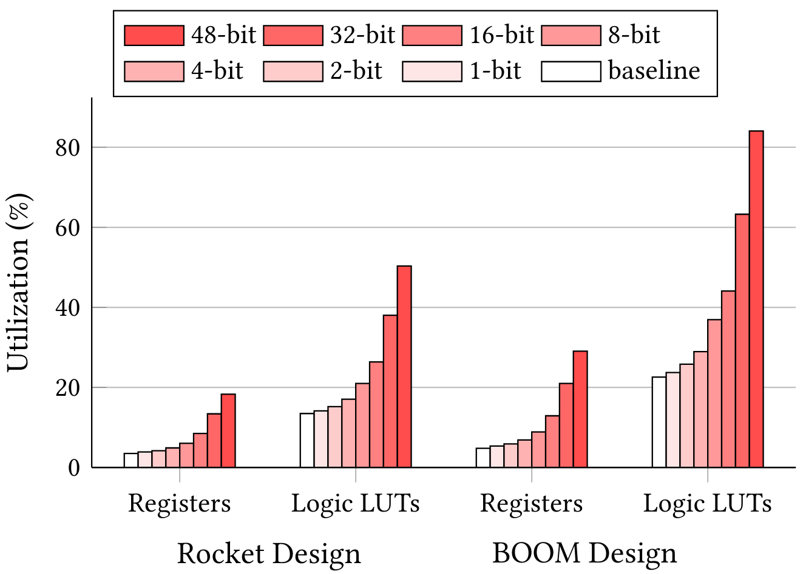
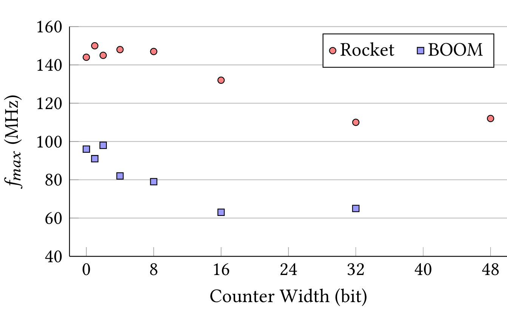

Problem 1: Most open-source simulators lack coverage
- Verilator only supports line and toggle coverage
- Treadle (Chisel interpreter), ESSENT and FireSim have no coverage support
Problem 2: Verilog coverage is an inadequate replacement for native Chisel coverage
Our Solution: Simulator Independent Coverage
cover statement allows us to move all coverage instrumentation into the FIRRTL compiler.
Adding support for the cover statement to a simulator is fairly simple.
Line Coverage
when
statement in the FIRRTL circuit. The mapping from lines to
branches is used to generate the coverage report from the
counts reported by the simulator.
Finite State Machine Coverage
Verilator: cover Statement Support
Verilator: Coverage Instrumentation Overhead
The cover Statement
Toggle Coverage
FireSim: cover Statement Support on FPGA
cover statements for FPGA-accelerated simulation
with FireSim.FireSim: Utilization and \(f_{max}\)


Extensive Simulator Support
More Features
- Applicable to other hardware languages.
- Feedback-Directed Fuzz Testing
- Coverage merging
- Formal cover trace generation